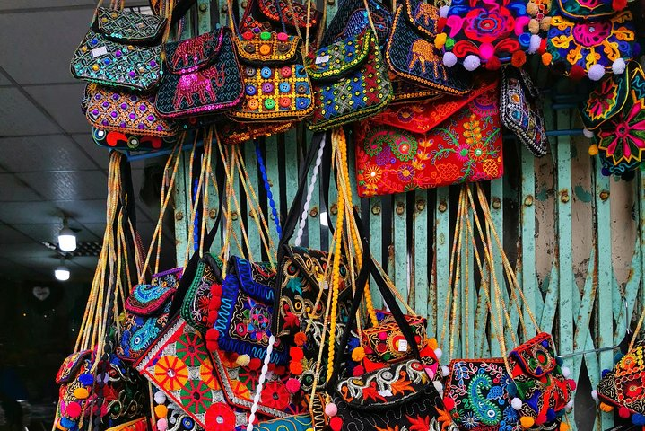
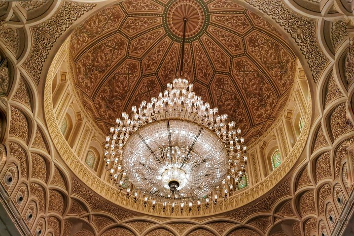
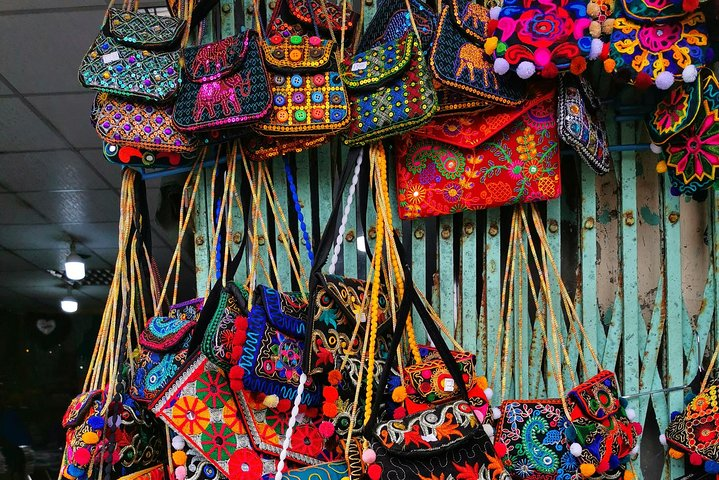
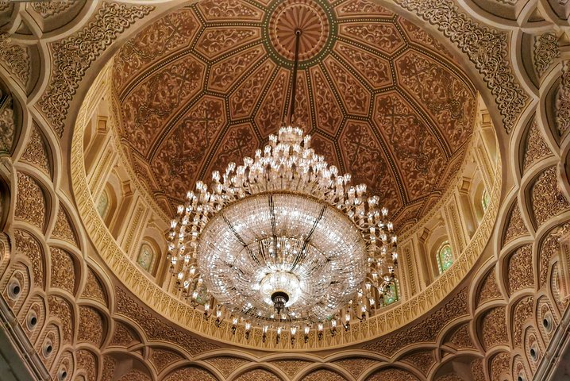
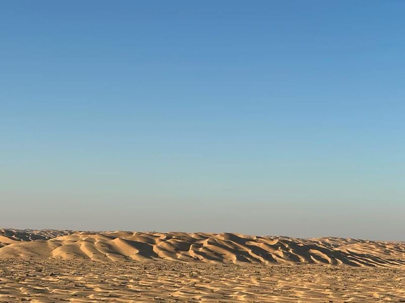
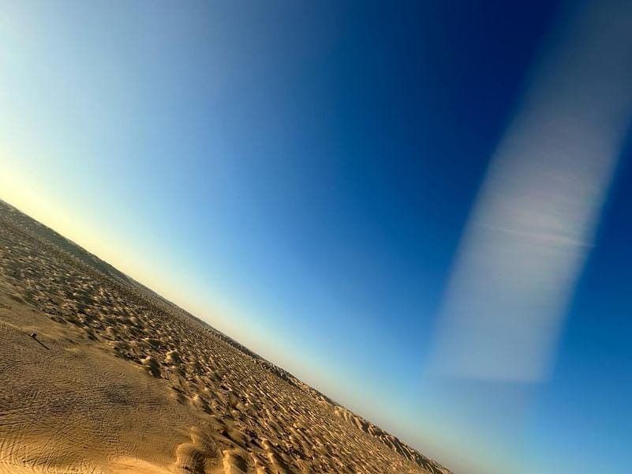
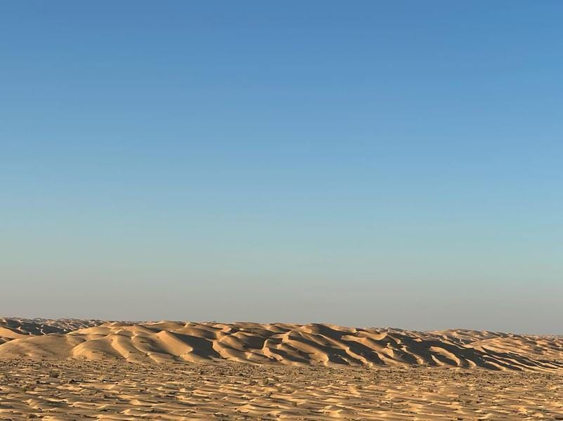
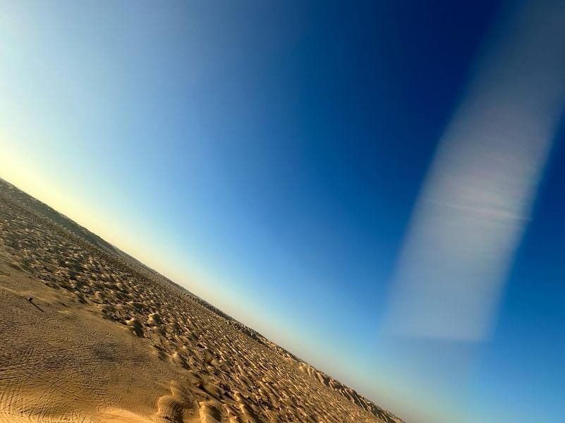

Esplora i nostri tour
Tour della città di Salalah
Esplora la città di Salalah, con una visita al Museo della Terra dell'Incenso, in questo tour privato di mezza giornata. Visiterai anche la Moschea Qaboos, il mercato dell'incenso, e avrai tutto il tempo per esplorare i suk.
 



Tour di Salalah Est
Desideri un'avventurosa odissea culturale? Salalah orientale ti aspetta! Conquista la vertiginosa Zig-Zag Road, esplora l'antico porto di Mirbat e attraversa in kayak il paradiso color smeraldo di Wadi Darbat. Tuffati nella storia ad Al Mughsail Beach, poi commercia le spezie nei vivaci suk. Feste beduine, ritmi dell'Oman e tuffi turchesi nella cascata di Darbat completano questa fuga epica. Un'avventura indimenticabile ti aspetta.
Tour di Salalah ovest
Abbandona lo stress e lo stile di vita della città e connettiti con la natura in un tour di mezza giornata. dove visiti la bellissima acqua sorgiva naturale di Ayn Razat. Successivamente, cammina lungo le rive della spiaggia di Mughsail per osservare le scogliere scolpite e le buche nelle rocce calcaree. Visita alla grotta Marnif e alla laguna per osservare i fenicotteri.
Tour di Salalah est e ovest di un'intera giornata
Dimentica di scegliere tra coste baciate dal sole e aspre montagne, questo tour di un'intera giornata a Salalah est e ovest ti consente di abbracciarli entrambi! Tuffati nel paradiso turchese di Mughsail Beach, fai snorkeling tra le vivaci barriere coralline e costruisci castelli di sabbia baciati dal Mar Arabico. Mentre il sole sale più in alto, conquista la leggendaria Zig-Zag Road, facendoti strada attraverso spettacolari scogliere con panorami mozzafiato.
Tramonto nel deserto
Il nostro tour al tramonto nel deserto ti porta attraverso infinite dune in emozionanti passeggiate a dorso di cammello. Conquista alte scogliere, attraversa in kayak gli uadi nascosti e perditi nel ritmo degli antichi suk. Mentre il sole dipinge il cielo con tonalità infuocate, condividi feste e risate nomadi sotto un milione di stelle.
 



Deserto Pernottamento
Abbandona la sedia a sdraio per le passeggiate sui cammelli e le feste attorno al fuoco! Scambia i tramonti con una ninna nanna da un milione di stelle sulle sabbie di Salalah. Questa fuga notturna nel deserto sussurra antichi segreti al vento, dipinge avventure nel fuoco e ti trasforma sotto la sinfonia della Via Lattea.